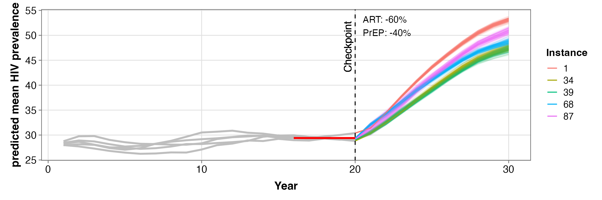

Uncertainty Aware Decision Support with Computationally Expensive Simulation Models: A Case Study of HIV Intervention Scenarios
Introduces a data-driven, uncertainty-aware decision support (DDUADS) workflow that combines sensitivity screening, Bayesian calibration, and multi-surrogate integration for stochastic simulators under tight compute budgets. Demonstrated on an HIV agent-based model in Chicago to evaluate ART and PrEP disruption scenarios.
medRxiv preprint, 2026